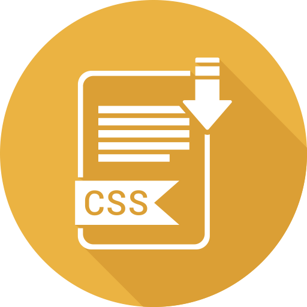

About Me

I'm Jacob, and I'm a husband, father, hunter, and dog lover! I have been a middle and high school math teacher for the last 6 years, and in my free time, I've added web development to my skill set. I was drawn towards web development because it is a place where I could challenge my creativity and problem solving. Now that I've learned to code, I want to use my experiences as a teacher and developer to make the world a little bit better, one line at a time.
- 
-

-

-

I decided to pursue teaching in the hopes that I could become a role model for the young men and women of tomorrow. As the years pass by, I feel a passion to not only teach but to create something that could help others. Through meticulous research and networking, I was moved to learn web development as a way to allow me to change many people's lives.
View my Resume